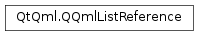

QQmlListReference¶
Synopsis¶
Functions¶
- def
append(arg__1) - def
at(arg__1) - def
canAppend() - def
canAt() - def
canClear() - def
canCount() - def
clear() - def
count() - def
isManipulable() - def
isReadable() - def
isValid() - def
listElementType() - def
object()
Detailed Description¶
-
class
PySide2.QtQml.QQmlListReference¶ -
class
PySide2.QtQml.QQmlListReference(arg__1, property[, arg__3=nullptr]) -
class
PySide2.QtQml.QQmlListReference(arg__1) Parameters: - property – str
- arg__1 –
PySide2.QtCore.QObject - arg__3 –
PySide2.QtQml.QQmlEngine
-
PySide2.QtQml.QQmlListReference.append(arg__1)¶ Parameters: arg__1 – PySide2.QtCore.QObjectReturn type: PySide2.QtCore.bool
-
PySide2.QtQml.QQmlListReference.at(arg__1)¶ Parameters: arg__1 – PySide2.QtCore.intReturn type: PySide2.QtCore.QObject
-
PySide2.QtQml.QQmlListReference.canAppend()¶ Return type: PySide2.QtCore.bool
-
PySide2.QtQml.QQmlListReference.canAt()¶ Return type: PySide2.QtCore.bool
-
PySide2.QtQml.QQmlListReference.canClear()¶ Return type: PySide2.QtCore.bool
-
PySide2.QtQml.QQmlListReference.canCount()¶ Return type: PySide2.QtCore.bool
-
PySide2.QtQml.QQmlListReference.clear()¶ Return type: PySide2.QtCore.bool
-
PySide2.QtQml.QQmlListReference.count()¶ Return type: PySide2.QtCore.int
-
PySide2.QtQml.QQmlListReference.isManipulable()¶ Return type: PySide2.QtCore.bool
-
PySide2.QtQml.QQmlListReference.isReadable()¶ Return type: PySide2.QtCore.bool
-
PySide2.QtQml.QQmlListReference.isValid()¶ Return type: PySide2.QtCore.bool
-
PySide2.QtQml.QQmlListReference.listElementType()¶ Return type: PySide2.QtCore.QMetaObject
-
PySide2.QtQml.QQmlListReference.object()¶ Return type: PySide2.QtCore.QObject
© 2018 The Qt Company Ltd. Documentation contributions included herein are the copyrights of their respective owners. The documentation provided herein is licensed under the terms of the GNU Free Documentation License version 1.3 as published by the Free Software Foundation. Qt and respective logos are trademarks of The Qt Company Ltd. in Finland and/or other countries worldwide. All other trademarks are property of their respective owners.